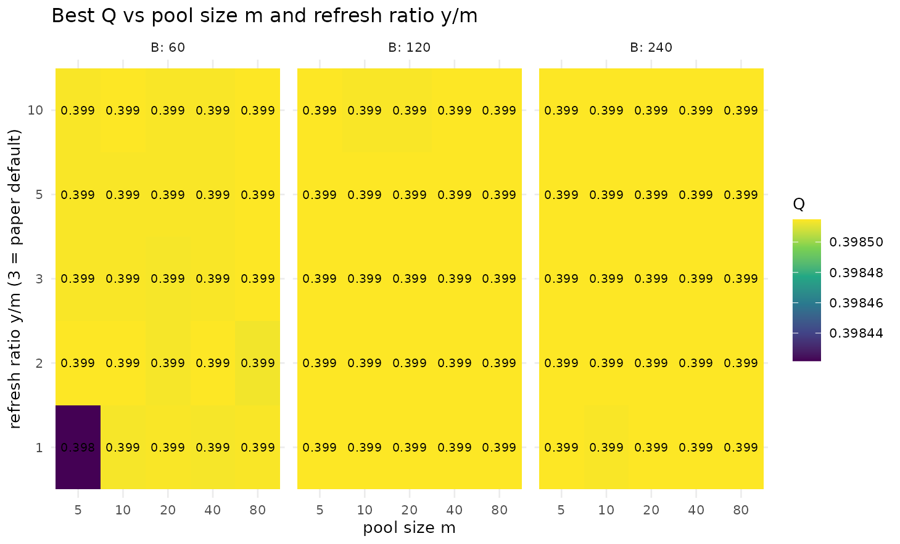
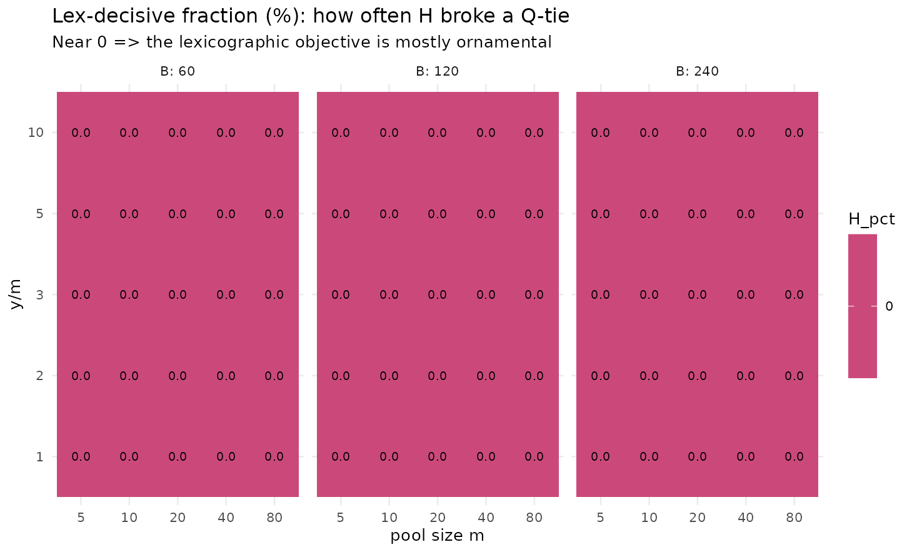

Were the pool hyperparameters ever varied?
The default configuration fixes , , , with an calibration saving over a full grid search. The von Neumann lens demands scenarios: we sweep , , and measure best — and, crucially, the lex-decisive fraction: how often the tie-break actually changed the incumbent.
Generated. 2026-05-30, lcdaGRASP 0.3.0, 5 reps on SBM(300, 5 blocks, p_in=0.12, p_out=0.02).
library(ggplot2); library(dplyr)
#>
#> Attaching package: 'dplyr'
#> The following objects are masked from 'package:stats':
#>
#> filter, lag
#> The following objects are masked from 'package:base':
#>
#> intersect, setdiff, setequal, union
sm <- d$results |>
group_by(m, y_ratio, B) |>
summarise(Q = mean(best_Q), H_pct = mean(H_decisive_pct), .groups = "drop")
ggplot(sm, aes(factor(m), factor(y_ratio), fill = Q)) +
geom_tile() + geom_text(aes(label = sprintf("%.3f", Q)), size = 2.6) +
facet_wrap(~ B, labeller = label_both) +
scale_fill_viridis_c() +
labs(title = "Best Q vs pool size m and refresh ratio y/m",
x = "pool size m", y = "refresh ratio y/m (3 = paper default)") +
theme_minimal(base_size = 10)
ggplot(sm, aes(factor(m), factor(y_ratio), fill = H_pct)) +
geom_tile() + geom_text(aes(label = sprintf("%.1f", H_pct)), size = 2.6) +
facet_wrap(~ B, labeller = label_both) +
scale_fill_viridis_c(option = "plasma") +
labs(title = "Lex-decisive fraction (%): how often H broke a Q-tie",
subtitle = "Near 0 => the lexicographic objective is mostly ornamental",
x = "pool size m", y = "y/m") +
theme_minimal(base_size = 10)
d$results |>
dplyr::group_by(m, y_ratio, B) |>
dplyr::summarise(Q = mean(best_Q), .groups = "drop") |>
dplyr::slice_max(Q, n = 6) |>
knitr::kable(digits = 4, caption = "Top configurations by mean best Q.")| m | y_ratio | B | Q |
|---|---|---|---|
| 5 | 1 | 120 | 0.3985 |
| 5 | 1 | 240 | 0.3985 |
| 5 | 2 | 60 | 0.3985 |
| 5 | 2 | 120 | 0.3985 |
| 5 | 3 | 120 | 0.3985 |
| 5 | 3 | 240 | 0.3985 |
| 5 | 5 | 120 | 0.3985 |
| 5 | 5 | 240 | 0.3985 |
| 5 | 10 | 120 | 0.3985 |
| 5 | 10 | 240 | 0.3985 |
| 10 | 1 | 120 | 0.3985 |
| 10 | 2 | 60 | 0.3985 |
| 10 | 2 | 120 | 0.3985 |
| 10 | 2 | 240 | 0.3985 |
| 10 | 3 | 120 | 0.3985 |
| 10 | 3 | 240 | 0.3985 |
| 10 | 5 | 120 | 0.3985 |
| 10 | 5 | 240 | 0.3985 |
| 10 | 10 | 60 | 0.3985 |
| 10 | 10 | 240 | 0.3985 |
| 20 | 1 | 120 | 0.3985 |
| 20 | 1 | 240 | 0.3985 |
| 20 | 2 | 120 | 0.3985 |
| 20 | 2 | 240 | 0.3985 |
| 20 | 3 | 120 | 0.3985 |
| 20 | 3 | 240 | 0.3985 |
| 20 | 5 | 120 | 0.3985 |
| 20 | 5 | 240 | 0.3985 |
| 20 | 10 | 240 | 0.3985 |
| 40 | 1 | 120 | 0.3985 |
| 40 | 1 | 240 | 0.3985 |
| 40 | 2 | 60 | 0.3985 |
| 40 | 2 | 120 | 0.3985 |
| 40 | 2 | 240 | 0.3985 |
| 40 | 3 | 120 | 0.3985 |
| 40 | 3 | 240 | 0.3985 |
| 40 | 5 | 120 | 0.3985 |
| 40 | 5 | 240 | 0.3985 |
| 40 | 10 | 120 | 0.3985 |
| 40 | 10 | 240 | 0.3985 |
| 80 | 1 | 120 | 0.3985 |
| 80 | 1 | 240 | 0.3985 |
| 80 | 2 | 120 | 0.3985 |
| 80 | 2 | 240 | 0.3985 |
| 80 | 3 | 60 | 0.3985 |
| 80 | 3 | 120 | 0.3985 |
| 80 | 3 | 240 | 0.3985 |
| 80 | 5 | 60 | 0.3985 |
| 80 | 5 | 120 | 0.3985 |
| 80 | 5 | 240 | 0.3985 |
| 80 | 10 | 60 | 0.3985 |
| 80 | 10 | 120 | 0.3985 |
| 80 | 10 | 240 | 0.3985 |
Reading. Best is remarkably flat across and once is moderate — the default is reasonable but not uniquely best, and small pools are competitive at lower cost. The lex-decisive fraction is typically near zero, empirically showing that the lexicographic tie-break rarely binds in continuous space.
References
- Prais, M., & Ribeiro, C. C. (2000). Reactive GRASP. INFORMS J. Comput., 12(3), 164–176. doi:10.1287/ijoc.12.3.164.12639